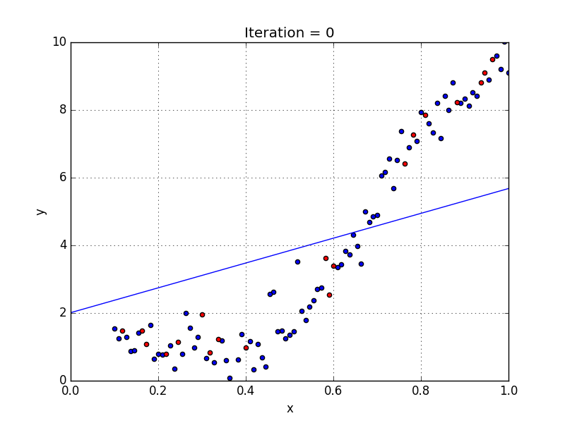
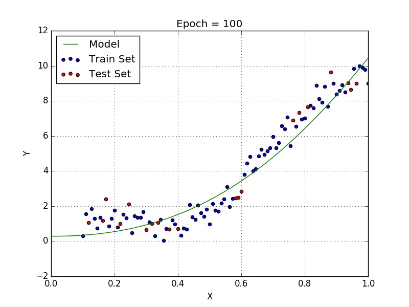

In general, regressions attempt to model a phenomena with a function the explains the relationship between independent and dependant variables. They can be used to model a variety of equations, not just linear but on this page we'll focus on linear which will look like this:
Anyone whose taken a chemistry, biology, or statistics class might be familiar with Linear Regression! It's what is used to caculate an equation that generalizes your experimental results to points that you may not have in your data set. If you use it to predict points outside of your data's range then that is called extrapolation. If you use the equation to predict values within your data range but for values that are not in the data set then that is called interpolation. A lot of really cool techniques have their foundation in a simple linear regression.
In the case of linear regression we are explicitly trying to model the relationship between an dependant variable, y, and an independent variable x.
Looking at the scatter plot we can infer that the dataset came from plugging in values into a sine function and adding a little noise to the final values before plotting so that the points aren't exactly along a sine wave line. We can also see that mapping it with a linear function will result in error because sinewaves and straight lines are very different. So I guess that means there's nothing we can do and we should just got home and call it a day... Well actually! There are more advanced techniques that will allow us better estimate non-linear phenomena.
The above graph shows the same dataset being modeled with a polynomial regression. With enough terms Quadratic functions allow us to model a great many shapes. Somewhat similar to Fourier Series being used to create an shape with circles.